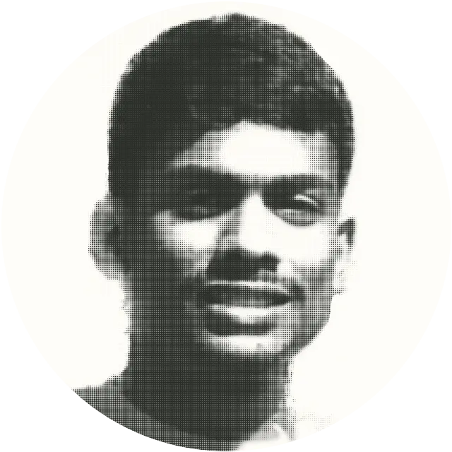

KP MemorialHigh Flyer Award
For excellence in academics
Weighted towards the academic record and technical work.
₹20,000

In memory of Krishnaprasad KT (1987–2008)
Mechanical Engineering 2004–08 Batch, NSSCE
Two deserving Mechanical Engineering students are honoured at each ceremony: the High Flyer Award for excellence in academics and the High Runner Award for excellence in extra-curriculars. Each award carries ₹20,000, a certificate and a crystal trophy.
The KP Memorial Award was instituted by the 2004–08 Mechanical Engineering alumni of NSS College of Engineering in memory of their batchmate. It recognises deserving students who do well in their studies and who also give their time to technical and extra-curricular work.
The awards are given by the board of trustees of the KP Memorial Trust, on the recommendation of the KP Memorial Award Council, together with the Department of Mechanical Engineering.
Recipients are presented with a cash award, a Certificate of Scholarship and an engraved crystal trophy at a ceremony in the department.
Weighted towards the academic record and technical work.
Weighted towards activities, innovation and faculty feedback.
We fondly remember him as a passionate student and a source of inspiration for us all.
KP, as his classmates called him, was brilliant throughout his college years, in academics and in extra-curricular activities alike. His tireless energy and his straightforward, friendly way with people are what his batchmates remember most.
His sudden death in a bus accident in 2008 left a gap that his friends have never filled. The KP Memorial Award celebrates his life by encouraging students who share his spirit.
Photographs from past ceremonies and from December 2026 will be added here.
Faculty of the Mechanical Engineering department shortlist candidates from the fifth and seventh semester classes.
The award council reviews each candidate's academic record, technical work and extra-curricular achievements.
Alumni meet the candidates and recommend one deserving student for each award.
Each year the Mechanical Engineering department shortlists candidates for the High Flyer and High Runner awards. Shortlisted students then fill in a short nomination form with their contact details, academic record, achievements and scholarships.
The form is open only during the nomination window. Entries go directly to the KP Memorial Award Council and are not published.
If you have been shortlisted and have trouble with the form, please contact the Mechanical Engineering department office.
The 2004–08 alumni first write to the college proposing an award in KP's memory.
The award is introduced at the batch reunion, with the Principal's consent.
The first High Flyer and High Runner awards are presented at NSSCE, Palakkad.
The second ceremony, with Certificates of Scholarship issued by the KP Memorial Trust.
The award is funded by the 2004–08 batch through the KP Memorial Trust. Friends, classmates, faculty and well-wishers are welcome to contribute so that it continues for years to come.
Give any amount you are comfortable with, by UPI or bank transfer. Every contribution helps recognise a deserving student.
After you pay, please share the transaction reference with the alumni team so your contribution can be recorded and acknowledged.